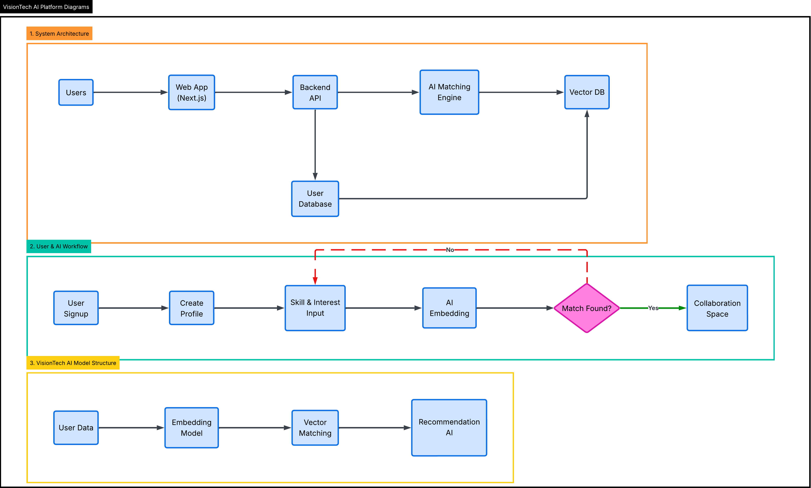

A. Personalised Learning
- Strengths and interests assessment
- AI-generated development roadmap
- Adaptive courses, challenges, and projects
AI innovation platform for youth
VisionTech matches talent to opportunities, accelerates learning, and turns bold ideas into launched projects.
What we unlock
Vision
Every young person moves from curiosity to competence to contribution—faster, with support that feels tailored, trusted, and human.
Mission
We provide education, digital skills, mentorship, and project-based experiences that unlock economic opportunities while nurturing innovation and purpose-driven leadership.
The problem
Young people struggle to find collaborators, mentorship, and opportunities that fit their potential. VisionTech uses AI to map strengths, goals, and momentum to the right people, projects, and roles.
Solution pillars
AI structural innovation
How it works, at a glance: we capture rich profile signals, translate them into vectors, run compatibility search, then refine with behaviour so every match and recommendation keeps improving.
Beyond keyword filters, VisionTech models meaning, fit, and momentum to recommend people, teams, and opportunities—not just content.
Each step feeds the next: capture → embed → store → match → recommend → learn.
Profiles ingest skills, goals, preferences.
OpenAI embeddings translate profiles into vectors.
Vectors kept in pgvector or Pinecone for fast similarity search.
Cosine similarity plus compatibility logic proposes collaborators and teams.
LLM and rules rank learning paths, mentors, and project opportunities.
Feedback signals tune scores, creating defensible IP over time.
Practical choices to ship quickly while keeping a path to scale.
Mapped to the five layers so teams know what to build now vs later.
Web app collects profile inputs, goals, and preferences.
Routes requests to profile, matching, and recommendation services.
PostgreSQL holds structured user data and signals.
Generates vectors from profiles and opportunities via OpenAI embeddings.
pgvector/Pinecone enables fast similarity and compatibility search.
Cosine similarity plus rules output people/team/opportunity matches.
LLM + ranking layer surfaces learning paths, mentors, and challenges.
Engagement and acceptance signals retrain scores and improve quality.
Technical diagram
Left-to-right flow. Shapes: circles = start/end, rectangles = services, cylinders = data, diamonds = decisions.
Complex architecture
Flow reads left-to-right across columns, then top-to-bottom inside each column. Control paths are solid; feedback paths are noted in text. Shapes: rectangles = services, cylinders = data, hexagons = AI models, diamonds = decisions.
Feedback loop: signals from Delivery/Experimentation/Events flow back to the Feature Store and Retraining Jobs (dashed path) to update embeddings, classifiers, and ranking models; new models ship via Model Registry.
Visual diagrams
Aligned with standard symbols: rectangles for services, green for processes, purple for data, orange diamonds for decisions, circles/ellipses for start/end.
Full system flowchart
Official reference diagram (supplied image) showing architecture, workflow, and AI stack in a single frame.

Roadmap
Core matching, profiles, and first mentor cohort.
University and community partners onboarded; first challenges live.
Deeper skills graph, personality signals, and employer integrations.
Localized playbooks, multilingual support, and partner network growth.
Join early access
Tell us where to reach you when pilot cohorts open. We respect your inbox.
Founder capability alignment